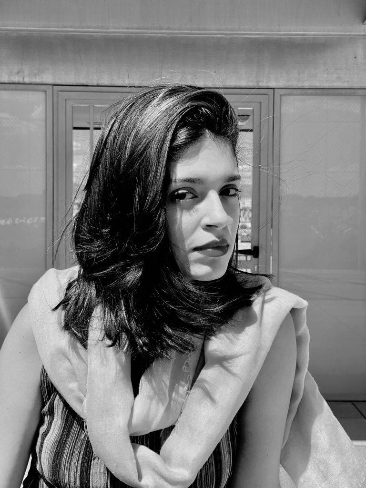

Esculturas, pinturas y performance con una mirada contemporánea y orgánica.
Soy Ananda de Sousa, artista multidisciplinar. Mi trabajo explora la relación entre cuerpo, materia y memoria a través de la cerámica, el lienzo y la acción. Cada pieza nace de un proceso manual cuidado, donde las texturas y las imperfecciones cuentan su propia historia.
He participado en exposiciones colectivas e individuales y colaboro con espacios culturales para acercar el arte a nuevos públicos. En esta web encontrarás una selección de series recientes, así como documentación de performances y obra en proceso.
Producción y soporte digital por 404 Studios Digital. Portafolios, sitios para artistas y micro‑experiencias con foco en rendimiento, accesibilidad y SEO técnico.
Actualmente trabajo desde Madrid y estoy abierta a proyectos, residencias y colaboraciones. Si quieres saber más sobre una pieza o proponer una idea, puedes escribirme desde la sección de contacto.